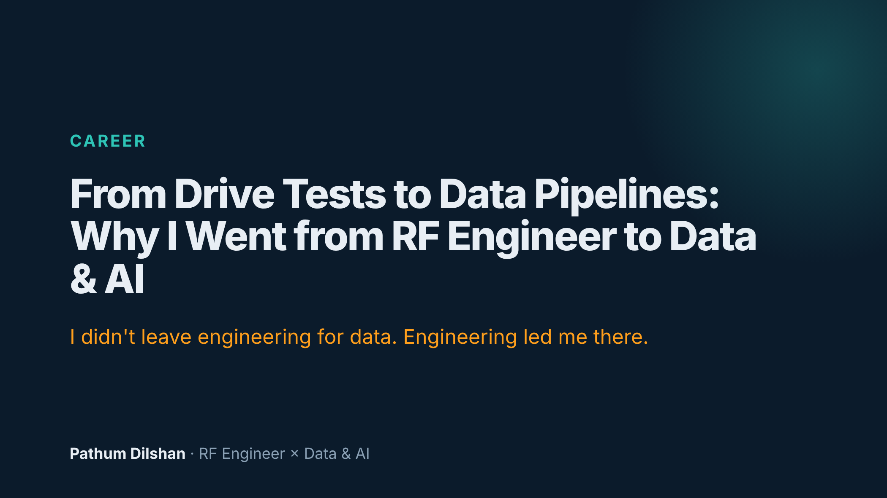

From Drive Tests to Data Pipelines: Why I Went from RF Engineer to Data & AI
What carried over, what didn't, and what I'd tell any engineer thinking about the same move

Two years ago my working day looked like this: drive-test logs, KPI dashboards, alarm lists, and a lot of Excel. Today I'm an RF and network planning engineer at Mobitel, reading for an MSc in Data Science & AI at the University of Moratuwa, and I build Python and Apache Airflow pipelines that process over 10 million KPI records a day.
I didn't plan a "career switch." I just kept running into the same wall, and data science was the way through it.
The wall: too much data, too few hours
A mobile network produces a staggering amount of data. Every cell reports dozens of counters every hour. When I started, first as a Huawei technical executive deployed to Hutch and then at Mobitel, most of my time went into collecting and formatting that data, not understanding it.
So I started automating. A Python script to merge exports. Then a scheduled job. Then a proper pipeline. Every hour I saved went into the part of the job I actually enjoyed: finding out why a cell was misbehaving.
What carried over from RF engineering
- Thinking in systems. A dropped call is never one thing. It's coverage, interference, handover parameters, load and hardware all interacting. That's exactly how you need to think about a machine-learning model and its data.
- Distrust of averages. Network engineers learn early that a "good" network-wide KPI can hide terrible individual cells. Data scientists call this aggregation bias. Same lesson, different name.
- Domain knowledge. This is the big one. Knowing that a KPI jumped because two vendors define a counter differently, not because something broke, is worth more than any algorithm.
What didn't carry over
- Statistics, properly. I could read a KPI chart, but I had to relearn probability, hypothesis testing and validation from the ground up.
- Software habits. Version control, testing, reproducible environments. Engineers write scripts; data teams need systems.
- Being comfortable with "it depends." RF has clear specifications. Machine learning is full of trade-offs where the honest answer is "let's test it."
What I'd tell another engineer
- Start with your own problem. Automate one report you hate. You'll learn more than from ten generic tutorials.
- Your domain is your advantage. There are many people who can train a model. Far fewer can tell you whether its output makes sense in a live network.
- Build in public. Write about what you learn. My Medium articles on medical AI and reinforcement learning taught me more than the projects themselves, because explaining forces clarity.
- Formal study helps, but it's not the starting line. I started the MSc after I'd already been automating for a while. The theory landed far better because I had real problems to attach it to.
Where this is going
My MSc research is on drift-aware anomaly detection for mobile network KPIs, a problem I met first as an engineer and now get to study properly. It's the clearest proof I have that the two careers aren't separate. The best work happens where they overlap.
If you're an engineer thinking about data and AI: you're not starting from zero. You're starting with the hardest part already done.
Pathum Dilshan is an RF & Network Planning Engineer at Mobitel, Sri Lanka, and an MSc Data Science & AI student at the University of Moratuwa. He writes about telecom, data and AI. Connect on LinkedIn or visit pmpdilshan.github.io.